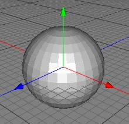

Ball Object
The ball is a parametric polygonobject which gives you a sphere which you can modify in a number of different ways. It's basic form appears as below.

Some of the properties of the ball object allow you to change the shape of the basic sphere. In the image below, the longitudinal and parallel parameters have been changed so that a pie-shaped segment is missing, and a top and bottom slice have been taken too. You could use these parameters to generate 3D pie charts, for example.

Properties
- Radius: Specifies the radius of the ball.
- Sections Longitudinal: Specifies the number of sections the longitudinal distance (equator) of the ball will be made up of. Defaults to 30.
- Longitudinal from: The starting angle of the sphere. Defaults to 0.
- Longitudinal to: The ending angle of the sphere. Default to 360 (1 entire turn).
- Sections Parallel: Specifies the number of sections the parallel distance (height) of the ball will be made up of. Defaults to 15.
- Parallel from: The upper-most angle that the ball is to start at. Defaults to 0 (the top).
- Parallel to: The lower-most angle that the ball is to end at. Defaults to 180 (the base).